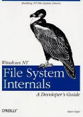
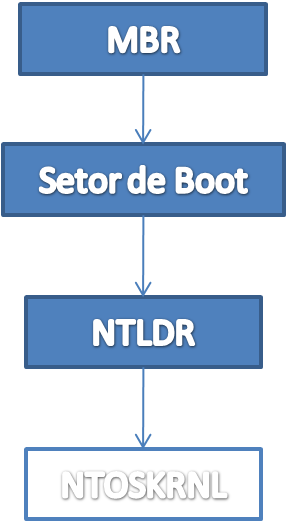
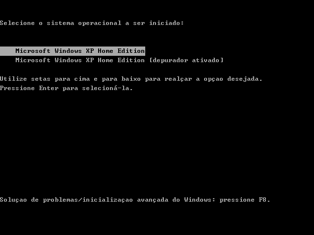
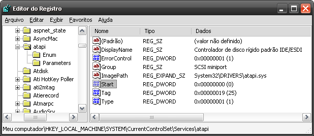

# O boot no Windows: NTLDR
Caloni, 2009-11-26 <computer> [up] [copy]Minhas análises estão demorando muito para ser feitas. Talvez seja a hora de revelar o pouco que sei (e pesquisei) sobre o próximo processo de boot do Windows: o NTLDR.
O nosso amigo NT Loader pode ser entendido através da leitura do já citado **Windows Internals** ou através de uma outra leitura que estou fazendo atualmente e que pouquíssimos amigos blogueiros irão se lembrar: o livro da galinha preta; formalmente conhecido como **Windows Nt File System Internals**.
Para os sabichões de plantão, inclusive os que me criticaram (?) no meu último texto humorístico sobre como Java é podre, eu sei que o bicho da capa não é uma galinha, mas um urubu. A troca de urubu por galinha vem do requisito básico para você fazer trabalhos esotéricos, como macumba e desenvolvimento de drivers: uma galinha preta na encruzilhada. Alguns usam um papel dentro da boca de um sapo, mas vai do gosto de cada um. =)
E, para os que leram o livro, devem entender que para explicar sobre o funcionamento do sistema de arquivos do Windows, parte intrínseca do funcionamento do próprio kernel, foi necessário ao autor explicar várias partes do kernel, inclusive **sua inicialização**; e é nessa parte que podemos aprender algo mais sobre o NT Loader.
Podemos aprender, por exemplo, que ele é carregado **logo depois do NT Detect**, que é o executável que dá uma olhada no hardware e ajusta a configuração do boot de acordo com o ambiente encontrado. Após esse ajuste, o nosso amigo NT Loader faz algumas coisas pra lá de interessantes.
O NTLDR é um executável "híbrido" que possui tanto código em modo real quanto código em modo protegido. Com isso podemos supor que é ele o responsável por entrar em modo protegido, uma tarefa que exige alguns conhecimentos da arquitetura.
Além disso, como o próprio nome diz, ele tecnicamente "sobe" o sistema operacional, pois provê a comunicação entre o hardware (processador e periféricos da máquina) e o software (kernel e drivers de boot). O hardware é o que está espetado na máquina e o kernel é o arquivo **ntoskrnl.exe**; para a comunicação entre eles existe uma camada de abstração, o **hal.dll**.
Esses dois arquivos, juntos dos drivers de boot, são carregados pelo NTLDR.
Depois de todo aquele trabalhão do setor de boot para analisar o sistema de arquivos, achar o NTLDR, carregá-lo na memória e executá-lo, o controle passa para o nosso amigo híbrido, ainda em modo real. Ele então abre a partição de boot e procura pelo arquivo boot.ini (estamos falando de um boot antes de bcdedit, mas o funcionamento seria aproximado). Como o driver do sistema de arquivos ainda não subiu, isso quer dizer que o NTLDR usa o próprio código embutido para interpretar uma FAT, NTFS ou outros sistemas suportados (um dos motivos por que não é possível instalar o Windows em um ReiserFS).
Nesse ponto o nosso amigo loader faz o que todo mundo já fez na infância (não fez?): trocar o modo de tela fazendo uma chamada para a BIOS para modo texto 80x50 em 16 cores. Ah, ele também faz algo que eu adorava fazer (você não?): encher a memória de vídeo de pixels pretos para limpar a tela!
Como ele leu a lista de kernels bootáveis, é isso que ele exibe naquela famosa tela que qualquer um que depura o kernel vê:
Escolheu seu boot, é a partir daí que ele acha o executável do kernel: **ntoskrnl.exe**. Ele deve estar na pasta system32 (em ambientes 32 bits). Também é nesse momento que é carregada a HAL (hal.dll) e isola-se o hardware do software a partir daí. As DLLs que esses dois componentes dependem são identificadas e carregadas na memória.
Agora é hora de abrir o registro. Quer dizer, parte dele. Dentro da pasta system32/config deve estar a hive SYSTEM, que é onde ficam os drivers que devem ser carregados a partir daí em vários níveis. Inicialmente são carregados os que possuem o valor **Start igual a zero**, como o driver Atapi (controlador de disco):
A partir daí vários componentes do kernel serão carregados progressivamente. Só que a partir do momento que é chamada a rotina interna **KiInitializeKernel** o NTLDR não tem mais nada pra fazer: o kernel, em sua forma básica e primitiva, está carregado.
windbg notepad $$>a<<a href="http://www.caloni.com.br/carregando-dlls-arbitrarias-pelo-windbg-parte-2">scripts\loadlibrary.txt</a> <strong>ntoskrnl.exe</strong> 0:000> lm m nt* start end module name 00400000 00629000 ntoskrnl (pdb symbols) c:\tools\symbols\ntkrnlmp.pdb\46DFBE2D3E484140A0909F7519B1700A2\ntkrnlmp.pdb 7c900000 7c9b6000 ntdll (pdb symbols) c:\tools\symbols\ntdll.pdb\6992F4DAF4B144068D78669D6CB5D2072\ntdll.pdb 0:000> x ntoskrnl!KiInit* 005ef332 ntoskrnl!KiInitializePcr = <no type information> 005eefc0 ntoskrnl!KiInitQueuedSpinLocks = <no type information> 005ef1de ntoskrnl!KiInitSystem = <no type information> 00439ded ntoskrnl!KiInitializeTSS = <no type information> <strong>005eadd2 ntoskrnl!KiInitializeKernel = <no type information></strong> 0043aefb ntoskrnl!KiInitializeAbios = <no type information> 005e4add ntoskrnl!KiInitMachineDependent = <no type information> 0058faa4 ntoskrnl!KiInitializePAT = <no type information> 005dde52 ntoskrnl!KiInitializeTSS2 = <no type information> 004105e5 ntoskrnl!KiInitializeUserApc = <no type information> 00415619 ntoskrnl!KiInitializeContextThread = <no type information> 0043afdb ntoskrnl!KiInitializeAbiosGdtEntry = <no type information> 005dde01 ntoskrnl!KiInitializeMachineType = <no type information> 005e51f7 ntoskrnl!KiInitializeMTRR = <no type information> 0:000> u ntoskrnl!KiInitializeKernel ntoskrnl!KiInitializeKernel: 005eadd2 6a28 push 28h 005eadd4 68c0784300 push offset ntoskrnl!KiDebugRegisterContextOffsets+0x3c (004378c0) 005eadd9 e8a510e2ff call ntoskrnl!_SEH_prolog (0040be83) 005eadde e8b531ffff call ntoskrnl!KiSetProcessorType (005ddf98) 005eade3 e8cfffffff call ntoskrnl!KiSetCR0Bits (005eadb7) 005eade8 e8d334ffff call ntoskrnl!KiIsNpxPresent (005de2c0) 005eaded 8845e7 mov byte ptr [ebp-19h],al 005eadf0 64a11c000000 mov eax,dword ptr fs:[0000001Ch]
Veremos nos próximos capítulos como podemos nos aproveitar do ntoskrnl.exe para poder depurar o código a partir daí. Até lá.
pouquíssimos amigos blogueiros irão se lembrar: o livro da galinha preta: http://www.amazon.com/Windows-File-System-Internals-Developers/dp/1565922492
último texto humorístico sobre como Java é podre, eu sei que o bicho da capa não é uma galinha, mas um urubu. A troca de urubu por galinha vem do requisito básico para você fazer trabalhos esotéricos, como macumba e desenvolvimento de drivers: uma galinha preta na encruzilhada. Alguns usam um papel dentro da boca de um sapo: http://www.driverentry.com.br/blog/2006/10/serial-killers.html